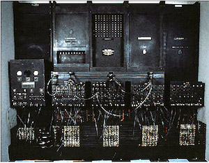
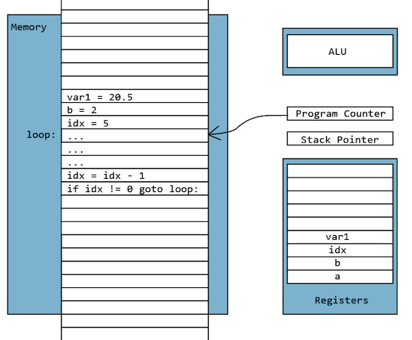
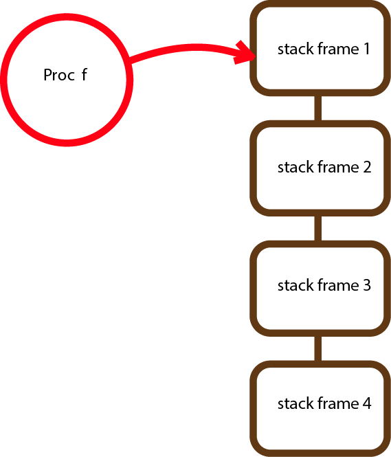
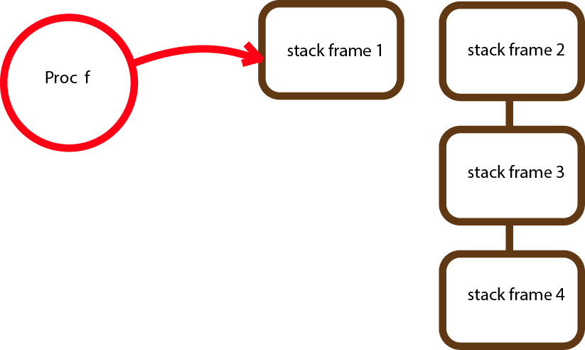

A Dev BootCamp Technical Blog
Blocks make me want to kill someone.

Blocks are used everywhere in Ruby and in the beginning they're pretty easy to understand.
Past this very-very beginning, however, we get Procs, Lambdas and the ability to use them as closures and it gets pretty crypto-annoying, pretty fast. "What the hell is really going on?"
The best way--and the only way I know of--is to understand Blocks and Procs is from the vantage point of where they came from, and that was long before the era of modern web programming. So come with me on a journey to the early days and we'll delve into the untold, secret history of Blocks, Procs and Lambdas. When we return to the present you'll not only be a master of B's, P's and L's, you'll truly understand variable scope and that's rather fundamental too.
And those bloody Blocs and Proc will never bother you again.
In the dark days before Object Oriented Programming and even before Procedural Programming graced the earth, the very first programs were just a string of commands:
load 50 load 23 add load 4 add ...
Very much like an HP calculator. If you wanted to execute a sequence of commands 5 times, you had to type them in 5 times. This happened all the time so pretty soon the loop was invented. The first loops were just a conditional test and a GOTO:
10 Sub 1, count. #subtract 1 from count
15 GOTO 40 on result 0 #if count went to zero, jump to line 40
20 ...
...
40 (continue)
The first GOTOs had took one argument, an address; GOTO 40, would go to line 40 of the program. Not very meaningful. What's happening at line 40? Later, the ability to use human readable labels were added as were more complex conditionals. Ready to be executed, your code might then might look like this:
Diagram 1: GOTO is equivalent to a Block.
The program counter contains the address in memory where we are currently executing the code. Here it is at the beginning of the loop. When a GOTO is executed it simply reloads the Program Counter with a new address and you start executing from there. Believe it or not, this was the first block and it's pretty close to a Ruby block.
Now here is where it get's interesting. A program's most important variables are stored in a set of fast storage areas called registers where they can quickly accessed. There were seldom enough registers though, so some variables would be stored in what is known as the system stack. It was just an area of memory that was operated like a cafeteria dish stack. A special register called the stack pointer would point to the current top of the stack. The system could push and pop data from this structure. We'll see this in the next diagram.
Now, let's say we have a loop like in the diagram above and it's purpose is to calculate an electricity bill. How would you re-use this same code to calculate a different customer's bill? Well, we have the GOTO statement, why not just GOTO our my_func label loop: from wherever we need to? Good idea, but we'll also have to figure out a way to get back.
Next, assuming we have more than one customer, we'll need to load our variables with different values to represent the new customers account data. Additionally, our loop will likely create additional local variables of it's own and we don't want their names to conflict with whatever variables may have been created elsewhere in the application. I can remember programming on systems where you could only have one variable with, for example, the name index or length. All names were global.
Finally, you'd like your loop to itself be able to call other sections of code too. So how can we handle all that?
Diagram 2: Function call is equivalent to a Method.
To make a function safe to call from anywhere in our program, a lot of work goes on behind the scenes with the the stack. At the start of a Function call, a special value is pushed on the stack (shown in brown) to indicate that this is the beginning of a stack frame. The next thing that happens is that the current value of the program counter is saved on the stack. This acts as the address to go back to when the function returns. Next, all the current variables in registers are saved onto the stack as well so they can be restored when the function returns. Next another stack frame marker is pushed onto the stack, then on top of it, any parameters being passed to the function are pushed on the stack. The function can add any other variables to the stack for whatever it wants but it can't reference anything past this frame marker. This is how variable scope is implemented! So now you know. This is why a Method in Ruby can't reference local variables outside itself. Finally, the GOTO is executed.
When the function is finished, it clears everything off the stack (all the variables it created as well as it's parameters) down to the first stack frame, then it pops off all the saved variables from the stack and restores them, it removes the return address from the stack and saves it aside for a moment, pushes it's return value on the stack and then loads the return address into the program counter. Boom, the method has returned.
a = 5
2.times do |par1|
puts par1
puts a
end
#Note this is the same as:
2.times do { |par1| puts par1; puts a }
When we run this block we get:
par1 = 0
a = 5
par1 = 1
a = 5
Because it's a block, the code is just in-line in memory and it can't be called from anywhere except this one location. No return address is saved on the stack. No variables are saved on the stack and there are no stack frame markers pushed. This is why we can still access the variable 'a' from within the block. Compare this with the same thing in Method form:
def my_meth(par1)
puts "par1"
puts a
end
a = 5
for i in (1..2)
my_meth(i)
end
#When we run this code we get an error:
...in `my_meth': undefined local variable or method `a'
for main:Object (NameError)
Before the method is run the local variables are saved on the stack and a stack frame marker is pushed. The method is not allowed to access anything below this marker including the variable 'a'. Next Ruby pushes the parameters being passed to the method onto the stack and we jump to the code of the method. The first thing the method does is utilize a little more secret code that Ruby has included to check the number of parameters passed on the stack.
When the method returns, the former local variables are popped from the stack and restored, the return address is popped from the stack, the return value is pushed on the stack.
As you might guess, Blocks are faster than method calls. If you are doing an intensive loop and your program is too slow, replacing a method call with a block is something you might look at trying.
When blocks and methods return they both push a return value on the stack. Methods pick up their previously stored return address and jump there. Blocks don't push a return address so they just keep running. Guess what happens then if you put a return statement in the middle of a block like this:
a = 5
2.times do |par1|
puts par1
return a
end
The return command searches in the stack for the previous return addressstored there and jumps to it. If we are at the top level of our file then we run this block we get an error. If our block is running inside a method, then the first return address that the return command finds is the one pushed by the method and it jumps to it. We'll return not just from our block but from the method too.
So let's say you have this great block that you are using with a .each iterator and you decide you want to use inside a different method. Rather than cut and paste the code to that new location you can make a Proc out of it. A Proc is just a block with a name so you can reuse it. (Personally, instead of passing a block to the array, I think it's likely time to think about passing the array to a method containing the block.)
To reuse the block {|a, b| a + b}, we make a new Proc out of it. This gives the block a name and allows us to refer to by that name from multiple places in our code. The name is just a Ruby variable which store the address of the Proc's block.
my_p = Proc.new {{|a, b| a + b}
#You call it like this:
my_p.call(a, b)
As with a block, (but unlike a method) referring to local variables like below is just fine.
c = 5
my_p = Proc.new do |a, b|
a + b + c
end
Like a block, a Proc is basically a GOTO. The Proc doesn't create a new stack frame and variable scope like a method does (so you can still reference them from within the Proc) and it doesn't save a return address, so be careful if you feel like calling return. Like a block, a Proc doesn't check the number of parameters you pass to it. A Proc is basically a variable that stores the address of a block.
When Ruby code wants to run a Proc, Ruby pulls the address to jump to from Proc variable. This is known as a level of indirection. Basically it means rather than start executing at some memory address, instead we read the address store there and jump to it.
As you might imagine if a method was written to take a Proc it can't take a Block and vice versa (at least without a trick we'll see in a moment.
You can pass a Proc just like any other parameter. my_p = Proc.new {|a, b| a + b} def method_call_a_proc(my_p) my_p.call(1,2) end method_call_a_proc(my_p)
Whenever you pass a Proc to a method you have to do it within the parameter ( )s. The reason for this is that Ruby reuses the code for passing a variable (remember a Proc's name is just a variable) and anything outside the () is assumed to be code and is executed in-line.
As mentioned above, if a method wants a block, it can't take a Proc and vice versa. To get around this Ruby created the '&' operator. The method call_a_proc above wants a Proc passed as a parameter. If you try to pass a block to it directly as below, it will complain. (Remember that you pass a block by writing it just outside the parameter parentheses().)
call_a_proc { Puts "inside the block")
# This generates an error.
You have to redefine the method using the '&' operator:
def call_a_block(&block)
block.call(2,1)
end
call_a_block {|a, b| a + b}
Now the method can take a block. Most of your enumerable iterators .each and .select are defined this way.
OK, so what if you still wanted to pass a Proc to a method that expects a block like call_a_block? In this case there's syntax that let's you do this and confusingly it re-uses the '&' operator.
p = Proc.new{|a, b| a + b}
[1,2,3,4].each_with_index(&p)
Here the '&' operator writes some secret code to convert a Proc call to a Block call. '&' is confusing because here it's used to turn a Proc into a Block. In one case it tells Ruby to add code to redirect through the named Proc and in the other the same '&' operator removes it. If you ever find yourself having trouble passing Procs with Blocks or vice versa, just look at where you could add or take out a '&'.
There are two differences between a Proc and a Lambda. First, a Lambda checks to make sure you pass it the correct number of parameters and second, a Lambda pushes it's return address on the stack so you can call return from within a lambda. In this way a Lambda is much closer to being a method.
There are two ways to define a lambda. I like to do it like this because it reminds me that a lambda handles parameters and return like a method:
my_add -> (a,b){a + b}
my_add = lambda {|a,b| a + b }
Now it's time to really bend your mind. When a new Proc is created it has access to its local scope because it doesn't push a new stack frame on the stack like a method does. Just for fun, let's create a Proc in one scope and then use it in a different one. Wonder what will happen. Warning this is about to get really weird.
c = 5
my_p = Proc.new do |a|
c = a + c
end
c = 18
my_p(4)
puts "c = #{c}"
def foo(p)
puts p.call(2)
end
foo(my_p)
foo(my_p)
puts "c = #{c}"
When my_p is created it has access to the local scope (because Procs don't push local variables on the stack). my_p stores a reference to 'c' so that when the value of 'c' changes, no problem, my_p picks it up. Well what about if we call my_p from within a method. Now inside method "foo" we can't access 'c'. Interestingly, my_p still can. When we run the above we get:
c = 22 24 26 c = 26
Even though the method cannot access the scope outside itself, the Proc magically still can. Now if that's not weird enough for you, Procs can reach past the grave and access dead variables. This life-after-death skill is why Procs were created in the first place.
Here we have a method and all it does is create and return a new Proc. Because it can refer to variables in it's local context it can use the variable c. But look what happens next. C is only defined inside the method. It should be dead to any code outside it.
def foo
c = 3
Proc.new { c += 1 }
end
f = foo
puts f.call #=> 4
puts f.call #=> 5
When foo returns, you would expect c to go out of scope and calling f would return an error. But it doesn't. The Proc is magic. Creating the Proc inside foo ghostified the context inside foo and it Proc 'f' can reach past the grave and get to it.
Remember those stack frames where Ruby stores variables in a scope? Well imagine them like this where each stack frame is an object.
Diagram 3: Stack Frames on the Stack.
When you call Proc.new it saves a reference to the stack frame holding the current local scope. When the stack frame is cleared as when the method "foo" above returns, this is what happens.
Diagram 3: Detached Stack Frame. It's alive!
The context for the method "foo" is removed from the stack, but it's not deleted because Proc f still has a reference to it. Thus the scope from within the foo method lives on until Proc 'f' goes away.
This is what is known as a "closure". A terrible name that means, "has a reference to the stack_frame object and all the variables that are in scope and which won't go away until the Proc goes away.
I am told that this weirdness was the reason for all this nonsense in the first place. There are times when you are programming when the local context is "just right" and you want to freeze it at that moment, but you don't want to execute it until later because maybe some parameters you want to pass it don't exist yet. Kinda like passing variables into the past. This violates so many tenants of OOD like encapsulation it makes me want to hurl.
Mike Farr
Everything that's interesting to do was once impossible.
April 24, 2015